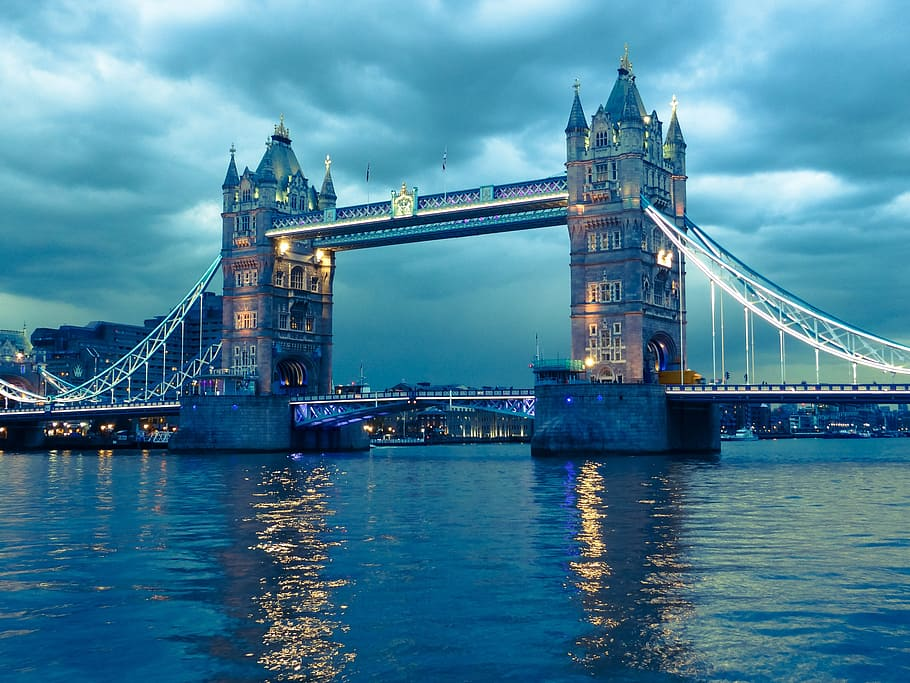
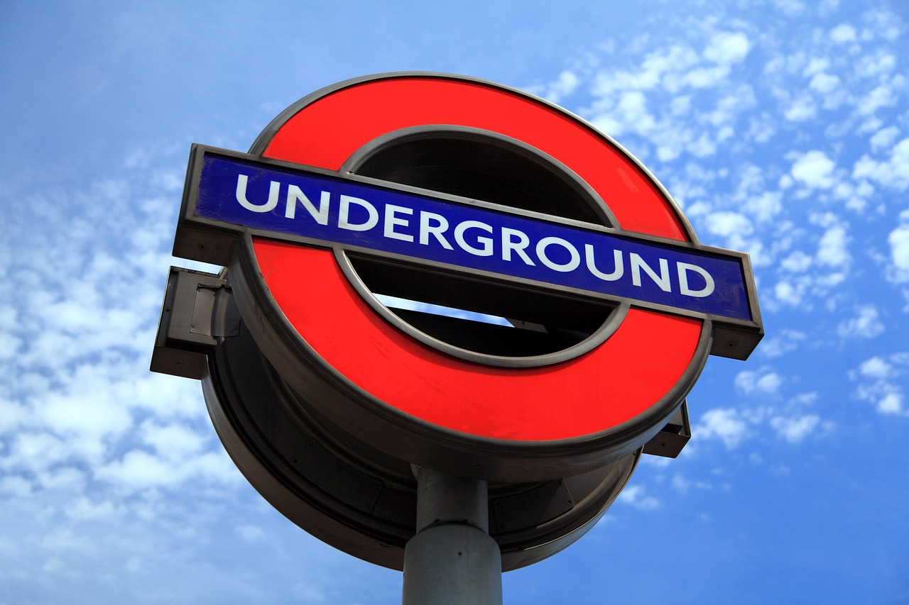
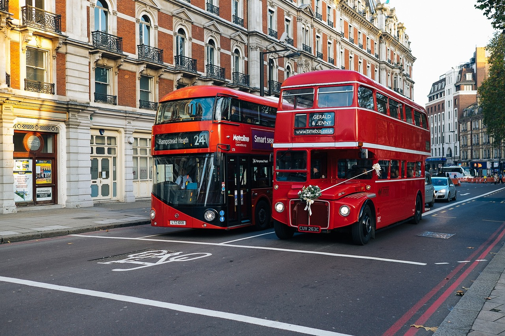
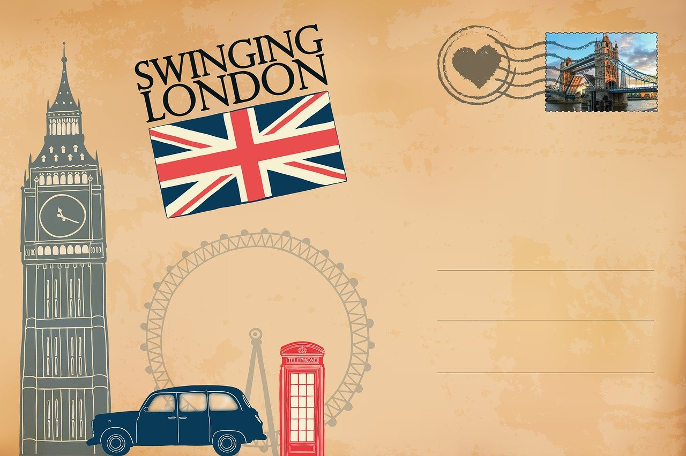

|  |
Puente Londres En 1799 se inició una competición sobre diseños para reemplazar el viejo puente, lo que motivó que Thomas Telford propusiera un puente con un único arco de hierro extendiéndose 180 m. La revolucionaria naturaleza del diseño fue elogiada pero nunca se llevó a cabo dada la incertidumbre sobre su viabilidad y sobre la cantidad de terreno necesaria para su construcción. |
|  |
Metro de Londres La primera sección del metro, llamada Metropolitan Railway (MetR, abreviadamente), realizaba inicialmente un trayecto entre Paddington (Bishop's Bridge), actualmente solo Paddington, y Farringdon Street, una estación temporal cerca de la actual estación de Farringdon. Esta línea se convirtió en el primer trayecto de ferrocarril subterráneo de pasajeros del mundo. |

|
Palacio Londres Los principales salones del palacio se encuentran en la zona noble, detrás de la fachada este. Lo primero que aparece es el Salón de Música, cuyo gran arco domina la fachada. Flanqueándolo se encuentran los salones azul y blanco. En el centro, sirviendo como un pasillo que une los salones de Estado se encuentra la Galería de Arte. |

|
Cabinas Telefónicas Diseñada por Giles Gilbert Scott, presente en las calles del Reino Unido, Malta, Bermudas y Gibraltar. A pesar de la disminución del número en los últimos años, la cabina telefónica roja tradicional todavía se puede ver en muchos lugares del Reino Unido y en las colonias británicas actuales o anteriores de todo el mundo. |
|  |
Autobus Londres London Buses es la subsidiaria de Transport for London (TfL) que administra los servicios de autobuses dentro del Gran Londres, en el Reino Unido. La mayoría de los servicios son provistos por operadores del sector privado, a pesar de que esto no se nota entre los pasajeros, debido a que todos los autobuses son de color rojo y poseen la misma tarifa. |
|  |
Turismo en Londres Londres es un destino turístico muy popular, por lo que esta es una de sus principales industrias: 350 000 personas trabajaban a tiempo completo en el sector turístico en 2003, un sector que deja anualmente en la ciudad unos quince mil millones de libras |